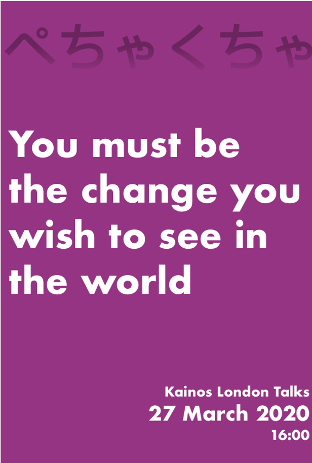

Juliano Saunders
I am an enthusiastic software engineer with a focus on delivering value to clients whilst maintaining quality of work. Expirienced with public sector aswell as private clients through the use of agile methodology. Known for integrating to new teams with ease and for actively engaging in events, discussions and meetings.
Experience
Software Engineer
Got exposure to working with public and private clients on client side. Kainos is a consultancy company, and therefore I'v had the chance to explore a wide variety of fields, from data engineering for the financial sector to full stack development for public sector. Besides recieving excellent feedback from collegues regarding enthusiasm and seemless integration with teams, also actively engaged with the company in the form of giving talks, and attending conferences with fellow collegues
Hackathons
Kainos A.I Camp
Using over 6 million flight records to predict if customers flight would be delayed, and by how long based on basic information. Worked on data and a Random Forest Classifier Model aswell as a simple interface to showcase
Service Now
Automatic System to capture SMS/Tweets, apply NLP and send the issue/feedback to the correct staff, client updated throughout process. Used Service Now and Azure. Took the role of SCRUM master, Set up SMS system and presented the project
Game Project
Bomber man inspired, isometric style, fully working multiplayer. Worked mainly on the Network (Google Cloud platform, UDP Protocol Network) and Documentation (Final Report, System requirements). Won the IBM Award for being judged best game of the course's year.
Education
University of Birminghamr
Upper Second-Class Honours (2.1)
Thesis and final project: Offline Character-Based Handwriting Recognition with Deep 2D Convolutional Neural Network (1st)
Tirana Internaltional School
United Nations Internaltional School
Skills
Interests
Besides a passionate technologist, I also enjoy getting involved with my local community in the form of canvassing, leafleting and campaigning. Sometimes managing small groups of campaigners in my area.
However, of course I am also a massive geek. I attend conferences, whether it be the Star Wars Chicago Celebration or gathering co-workers to attend the Scala London Conference 2019. As an eaguer learner, I love doing online courses on a range of subjects, giving presentations on technical and non technical topics and generally getting involved in events
Presentations
